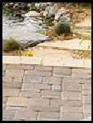
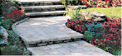
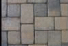
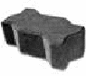
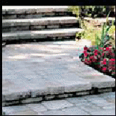

The Benefits of Interlocking Concrete Pavers Versus Other Paving Solutions Are Numerous
- A vast variety of paving styles
- Unlimited color possibilities
- Create your own design
- Low cost, no maintenance
- 50-year life expectancy
- No cracking
- 3 times stronger than poured concrete
- Perfect for freeze-thaw conditions
- Pavers move with soil conditions
- Easy installation
DESIGN FLEXIBILITY

The many shapes, patterns, and colors of Concrete Pavers allow for design
creativity, as well as delineation of pavement areas, such as parking
lanes, cross walks, and intersections. The beauty of pavers adds
value and visual appeal to any property. By adding flexibility not
possible with rigid pavement, pavers can flow with existing
landscaping to deliver beauty to any property.
MANY SHAPES AND COLORS

Suppliers stock rustic stone-like pavers to those that look like clay brick.
Light colored pavers offer a cooler surface around patios and pool
decks.
INITIAL PAVER INSTALLATION COST
Cost
savings can be achieved for small and simple projects by a home owner
installing the pavement themselves with the aid of a good DIY
installation manual, usually provided by the manufacturer of the
paver products. Generally, concrete pavers are less expensive than
clay pavers, granite pavers or sandstone pavers. When considering
maintenance and replacement costs, pavers offer an economical
long-term alternative to other types of pavement.
PAVER STRENGTH

Concrete
pavers are extremely dense units which possess exceptional strength
and durability, superior stability under severe loads, and are
unaffected by the extremes of heat and frost. Each unit has joints
that allow for a small amount of movement without cracking. Factory
made pavers last for decades.
EASY TO REPAIR
Remove
and reinstate the same pavers with no ugly patches after repairs to
the base or underground utilities. Asphalt, concrete, and stamped
concrete can't make this claim. Pavers are low-maintenance and offer
low life-cycle costs
MAINTENANCE

Stained
or broken pavers can be easily replaced without patches. Dark colored
pavers can help hide stains. Ants and weeds in joints can be
prevented with sealers or herbicides. Pavers can be repaired by
lifting the affected area, re-grading and re-compacting the base and
bedding sand and reinstalling the same pavers. It is an inexpensive
procedure that leaves no unsightly repair patches.
WINTER DURABILITY & SNOW REMOVAL
Snow
can be plowed, blown or shoveled just like asphalt or concrete
pavements. The chamfered (beveled) edge of pavers will prevent you
from catching an edge with the plow or shovel. Using de-icing
products like salt or calcium chloride will not harm or pit the
pavers. Electric or liquid snow-melting systems work well under
concrete pavers, eliminating snow removal while reducing slip
hazards. Smooth surface allows for easy snow removal. Pavers can be
colored dark to help melt snow faster. Snow-melt systems can be
installed to eliminate snow and ice removal. Concrete pavers resist
deterioration of freezing and thawing cycles and deicing salts better
than asphalt and better than ordinary poured in place concrete.
WEATHER RESISTANCE
Pavers
can be used in any climate and can be trafficked immediately upon
compaction. The joints between the pavers eliminate the cracking
common with traditional asphalt and concrete pavements.
DURABILITY

Interlocking
concrete pavers are a flexible system and allow for movement, they
are almost indestructible, the pavement system moves in unison with
the earths usual tendency to swell and contract over the long term
thus avoiding any serious damage.
VERSATILITY
Pavers
can be applied in both residential and commercial settings, including
surface coverings for driveways, parking lots, promenades, sidewalks,
pool decks, patios, streets, golf cart paths and even roof gardens.
Interlocking concrete pavers are a sensible and aesthetically
attractive choice for all outdoor surfaces.
SAFETY
On
both vehicular and pedestrian applications pavers have a non-skid
surface even when the pavers are wet they are safe to walk or drive a
vehicle over them.
Call Shoreline Landcare at 630-551-5224 for a free estimate or click
here
|